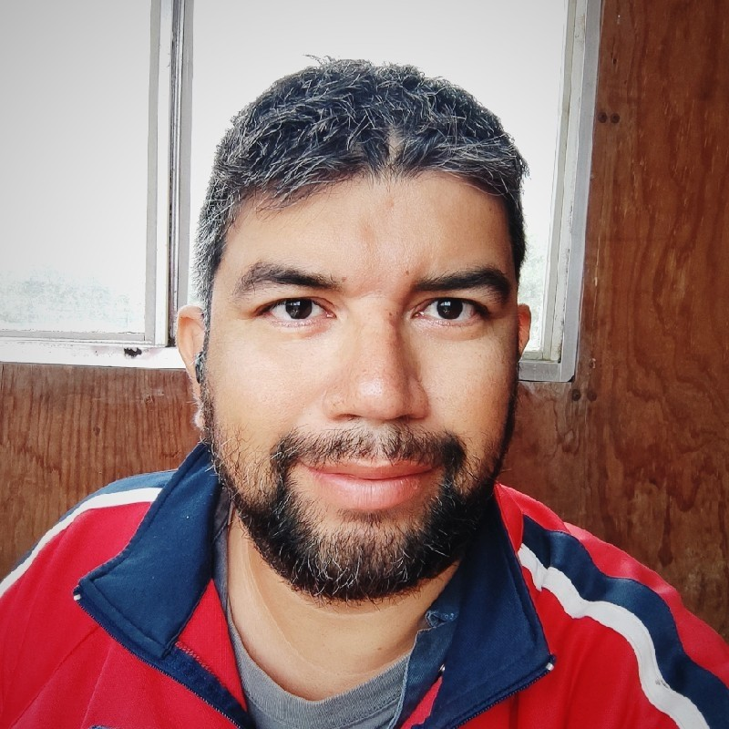

Mi Resumen:

Soy una persona que ha estado en diferentes tipos de trabajo pero siempre me gusta aprender cosas nuevas
Formación:
-
Ingeniería Industrial
- Universidad del Atlántico (2018 - 2021)
-
Mantenimiento preventivo y correctivo a PC (Diploma)
- CECATI24 (2009)
Experiencia laboral
-
Operador de Equipo de Bombeo Hidráulico - Servicios Integrales Tamabra S.A. de C.V.
marzo 2019 - actualidad
- Manejo de fliudo con alta presión
- Monitoreo de presiones
- Manipulación de varios tipos de valvulas
- Chequeo de niveles en contenedores
- Manejo de separadores bifásicos y trifásicos
- Optimización de producciónde de hidrocarburos
- Limpieza del área de trabajo
-
Community Manager - Ganas de Ayudar
septiembre 2018 - diciembre 2018
- Manejo de redes sociales (Facebook)
- Diseño de publicidad
- Atención a clientes
- Atención telefónica
- Manejo de personal
- Venta de cirujías
- Campañas foraneas
- Agendado de citas
-
Operador de Equipo de Bombeo Hidráulico - Nuvoil
diciembre 2014 - agosto 2018
- Manejo de fliudo con alta presión
- Monitoreo de presiones
- Manipulación de varios tipos de valvulas
- Chequeo de niveles en contenedores
- Manejo de separadores bifásicos y trifásicos
- Optimización de producciónde de hidrocarburos
- Limpieza del área de trabajo
-
Operador de Equipo de Bombeo Hidráulico - Servicios Integrales GAMA
abril 2012 - diciembre 2014
- Manejo de fliudo con alta presión
- Monitoreo de presiones
- Manipulación de varios tipos de valvulas
- Chequeo de niveles en contenedores
- Manejo de separadores bifásicos y trifásicos
- Optimización de producciónde de hidrocarburos
- Limpieza del área de trabajo
-
Diseñador gráfico - Imprenta "El Angel"
octubre 2002 - abril 2012
- Diseño gráfico por computadora
- Diseño vectorial
- Manejo de CorelDRAW
- Instalación de software
- Instalación de hardware
Aptitudes
- CSS
- HTML5
- CorelDRAW
- Edición de imagenes
- Ilustración vectorial
- Informatica
- Mantenimiento informático
- Reparación de equipos informáticos
- Procesadores de texto
- Instalación de software
- Instalación de hardware
- Diseño gráfico
- Publicidad en redes sociales (Facebook)
- Servicio al cliente
- Ventas
- Atención telefónica
Certificaciones:
Mis aficiones
Contacto